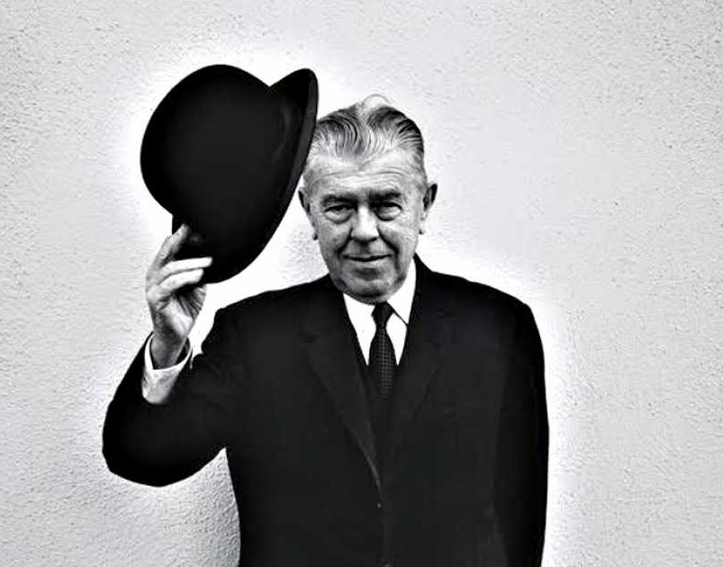

Contrario ya al automatismo, su pintura se hizo reflexiva y minuciosa, y se caracterizó sobre todo por la asociación de elementos disímiles entre los que establece ingeniosas analogías o nexos insólitos y disparatados, pero convincentes dentro de la realidad pictórica. Así, sus referencias se van haciendo cada vez más intelectualizadas, hasta el punto de que muchas de sus obras deben leerse en relación con las tesis del estructuralismo. Son habituales en sus cuadros los juegos de duplicaciones, ausencias y representaciones dentro de representaciones.

